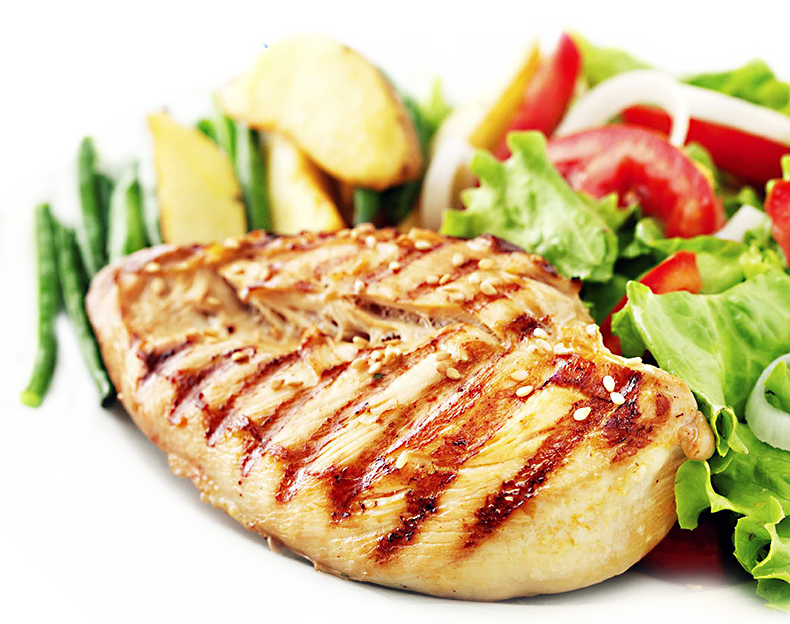

Classic · 25 minutes
Classic Grilled Chicken
The ultimate reliable standby. This method guarantees juicy, flavorful chicken that pairs perfectly with absolutely any side dish you have on hand.
Act I · The Setup
Even thickness and high heat are the key to fast, evenly cooked grilled chicken. A simple spice blend keeps this flexible for any cuisine.
Act II · Ingredients
- 2 boneless, skinless chicken breasts
- 2 tbsp olive oil
- 1 tsp garlic powder
- 1 tsp onion powder
- 1 tsp smoked paprika
- Salt and black pepper
Act III · Steps
- Place the chicken breasts in a zip‑top bag and pound them to an even 1/2‑inch thickness.
- Rub the chicken thoroughly with olive oil, salt, pepper, and the dry spices.
- Heat a grill pan or outdoor grill to medium‑high heat.
- Grill for 5–6 minutes per side without moving them, until the internal temperature reaches 165°F. Let rest before slicing.
Act IV · Tips & shortcuts
Pounding the chicken to an even thickness is the secret to fast, completely even cooking without drying out the edges. Leftovers make great salad toppings or wraps.